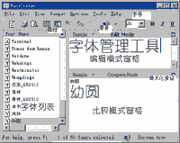

|
|
| 当前位置：电脑报电子版 > 1999 年 > 28 期 > 软件世界 > 多功能字体管理工具FontLister |
| 《 多功能字体管理工具FontLister 》 |
| FontLister是一个多功能字体管理工具，运行后的主界面（未打开“字体管理器”）。它不仅可以进行所有字体的预览，还提供了将文字转存为BMP图片，字体安装、删除、复制、粘贴等功能，并还附带有“字体管理器”等工具。最重要的是，FontLister对中文字体的支持较好，通过简单设置就可以预览和管理中文字体，这是许多字体工具欠缺的。该软件下载地址为http://www8.silversand.net/nethome/newhua/file/fl.exe，下载文件大小为938KB。 一、文字转存BMP图片 FontLister可以将文字转存为BMP图片，其操作方法是：选中主界面左侧字体列表中的某种字体，单击“File”菜单下的“Export Sample As Bitmap”命令，打开对话框。在“Sample”下的文字输入框内输入欲转存为BMP图片的文字，在“Size”下拉菜单中选定字号。如要在转存后的BMP图片中加入字体名称，可选中“Options”下的“Indude Font Name”项。若要改变BMP图片中的字体颜色和背景颜色，可打开“Foreground Color”和“Background Color”下拉调色板进行选择。操作完成后单击“Export 1 Bitmap”按钮，在对话框内选择存盘路径，单击“确定”，即可以该字体名作为文件名保存一个BMP图片。 二、打印字体示例 FontLister提供了完善的字体示例打印功能，其“File”菜单提供了四条命令进行相关操作。对英文字体，你只须选中字体列表中的某种字体，再执行图3菜单中的命令即可。若要打印中文字体，必须打开图1右下（比较模式）窗格中的“Sample”下拉菜单（或“Format”菜单下的“Edit Sample”子菜单），选中其中的“Custom”命令，在打开的对话框中输入若干中文文字，然后再选中字体列表中的某种中文字体。此后，不仅比较模式窗格中可显示相应的中文字体示例，而且可进行打印预览、打印等操作。 三、字体编辑 FontLister主界面中的右上窗格叫编辑模式窗格。它可以直接显示输入的中英文字体，例如你在字体列表中选中了某种字体，则在编辑模式窗格中输入的文字就以该字体立即显示，利用这种方法可对任意一种中文字体进行预览。若打开“Edit”菜单，可以执行撤销（Undo）、剪贴等编辑操作。 四、字体查看和预览 打开FontLister的“View”菜单，选中菜单上面的四条命令，即可在字体列表中列出系统中的所有显示字体、打印字体、Windows\Font文件夹中的字体和已安装的字体。选中字体列表中的某种字体可对其进行预览，这些字体的数目以及类型可在窗口底部的状态栏显示。 选中字体列表中的某种字体，单击“View”菜单中的“ANSI Table”命令，可打开对话框显示该字体的ANSI字符集，包括全部英文字符及符号等。若单击“Font Properties”命令（工具栏中的“Font Properties”按钮或按F4键），或双击比较模式窗格中的字体，就能打开字体属性对话框，显示该字体的全部属性（包括字形），此时中文字体也可在属性框内正确显示。因此，这也是预览中文字体的一种方法。 五、查看和预览格式设置 编辑模式和比较模式窗格左上角各有一个“Sample”菜单，它与主窗口“Format”菜单下“Edit Sample”和“Compare Sample”子菜单的内容相同。其中编辑模式下的“Sample”菜单。使用菜单中的第一条命令，可清除编辑模式窗格中的全部字符。第二、三条命令可显示英文字体中的“默认”字符（即系统或用户设置的一句话）和“ANSI字符”，但对中文字体中的汉字不起作用。用户若要向编辑模式窗格输入中文，可以单击上述两条命令中的任意一条。使用“Sample”菜单中的最后一条命令，可将文件中的中英文字符装入编辑模式窗格。 比较模式下的“Sample”菜单如图6所示。当你选中字体列表中的某种字体，再选中图6菜单前四条命令之一，即可按图6中标注的方式显示字符集中的字符（对于中文字体只能显示26个英文字符和少数符号）。选中第五、六条命令则分别显示字体中包含的编号或符号。单击最后一条“Custom”（自定义）命令，可打开对话框输入你指定的中英文字符，此后无论你选中字体列表中的何种字体，FontLister都可以正常预览。因此，对中文Win95/98用户来说，使用“Custom”命令输入中文字符，再选中“Custom”命令进行字体预览，就不会发生中文字体显示不正确的问题。 六、设置 FontLister的“Options”菜单，提供了用户对编辑模式和比较模式窗格中的字体属性（粗体、斜体、下划线）进行设置的三条命令（工具栏中也有对应的按钮），字号则必须使用工具栏中的“字号”按钮进行设置。一般采用FontLister的默认设置即可。 另外，在选中“View”菜单中的“List Of Font”和“Status Bar”时，FontLister主窗口中的字体列表和状态栏被打开。若“View”下的“Toolbars”子菜单中的两项被选中，则FontLister窗口菜单栏和工具栏也被打开。 需要说明的是：编辑模式和比较模式窗格可以关闭其中的一个，如果你单击某一窗格右上角的最大化（还原）按钮，则该窗格最大化，另一窗格则被关闭。最大化后再单击同一按钮，则可将窗格还原。 七、工具使用 FontLister提供了以下几个工具：一是“Tools”菜单中的第一条命令可直接打开Windows\Font文件夹，供用户查看其中的字体。单击“Tools”菜单中的第二条命令，可打开“字符映射表”，用户可以查看、复制其中的字符。 若用户选中“View”菜单下的“Explorer Tree”命令，可在FontLister主窗口左边增加一个叫做“字体管理器”的工具，其界面与Win95/98“资源管理器”的左窗格几乎一样，用户可用它打开或寻找本机硬盘或光盘上的字体文件，这在执行字体安装、删除等管理操作时非常有用，可以帮助用户快速找到常用的字体文件夹。 八、字体安装和删除 使用FontLister安装和删除字体的最大好处是可以事先进行预览。安装方法是：使用“字体管理器”找到需要安装的字体，其字体名称就会显示在FontLister主窗口的字体列表中，将其选中即可按上面介绍的方法进行预览。若需要安装，可单击“Edit”菜单下的“Install font”命令，在对话框中单击“OK”进行确认后开始安装。若要删除字体，也是先找到并预览字体，最后单击“Edit”菜单下的“Delete font”命令，确认后删除。 (新疆 张迎新) |
| 下载本期推荐软件 | 页 首 |
| 《电脑报》版权所有，电脑报网站编辑部设计制作发布 |